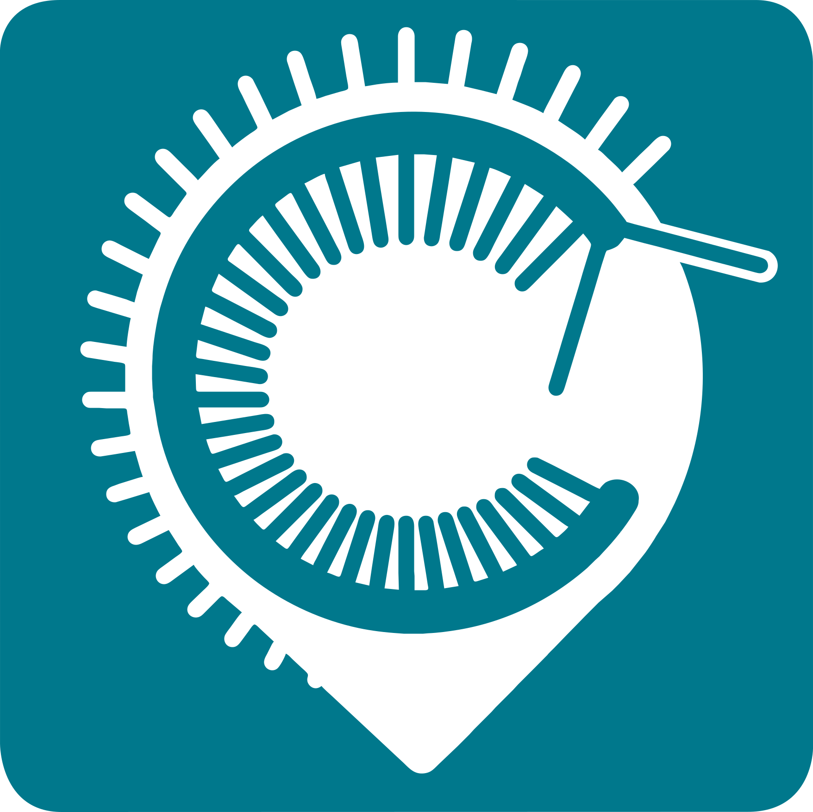

Débutant
Avancé

Centipede-RTK Web Serial
🔌 Connecter
⏏️ Déconnecter
USB-C
Bluetooth
—
Configurations
— Choisir une configuration —
↻
⚙️
📤 Téléverser
i
En attente...
Prêt à se connecter
Paramètres avancés
✕
Fin de ligne
CRLF
LF
CR
Aucun
Vitesse de transmission
4800
9600
19200
28800
38400
57600
76800
115200
230400
460800
576000
921600
Délai entre commande(s)
Charger un fichier personnel
💾 SAVECONFIG
![usb-connected]()
![Bluetooth]()